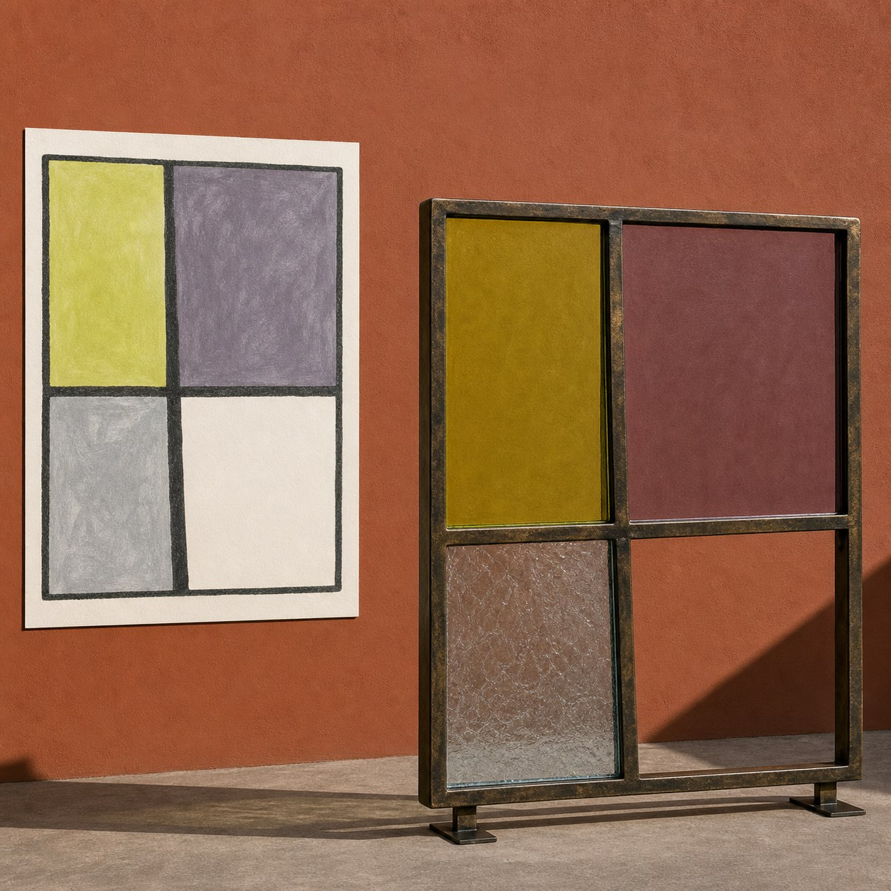
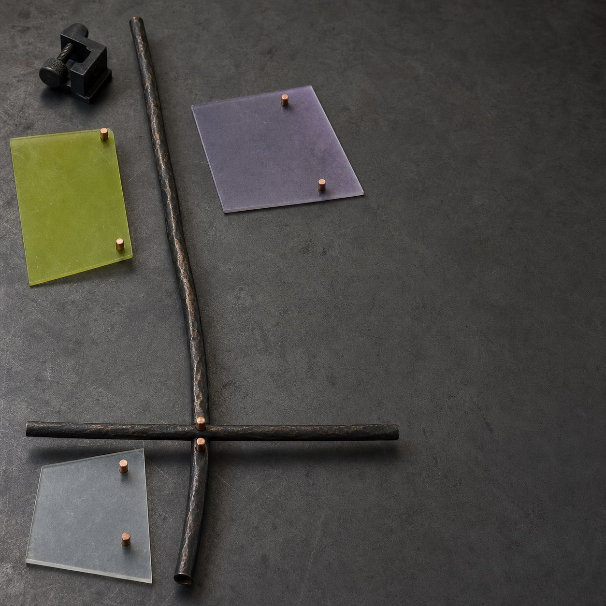
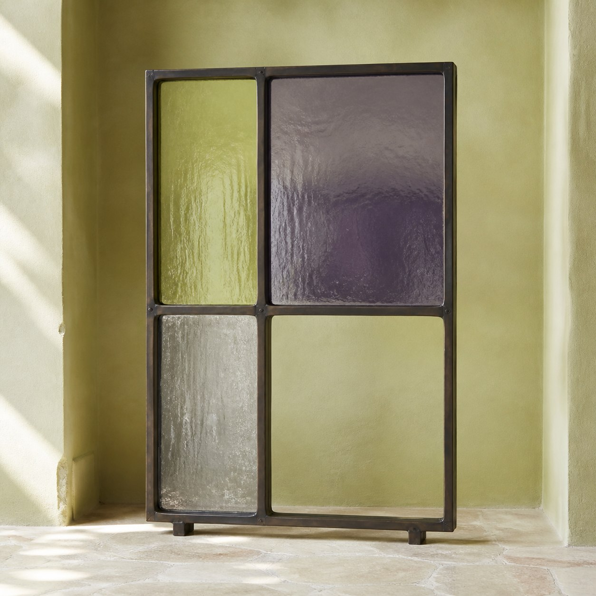
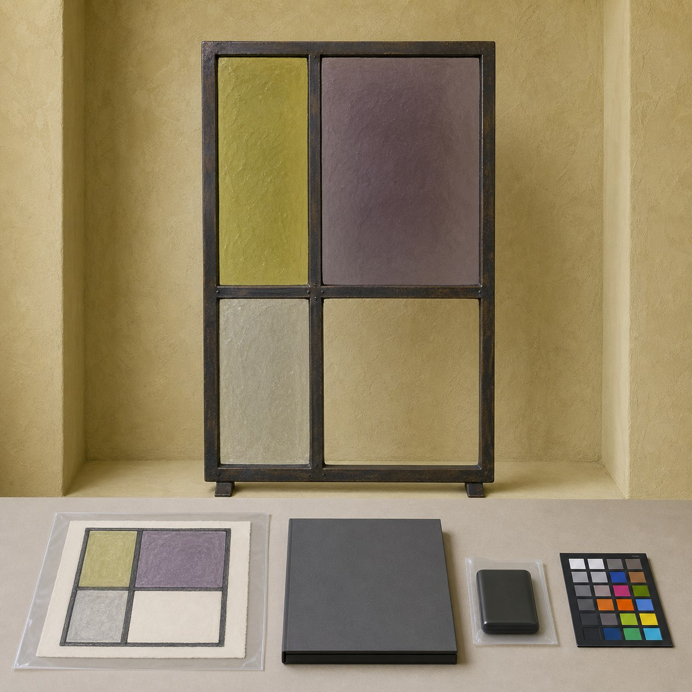

今日观察
这次从一张已经完成、权利边界清楚的儿童蛋彩画开始：深炭色边框里，一条偏左竖线和一条偏低横线，把画面分成四个大小不同的色域。左上是浅黄绿，右上是烟紫，左下是冰灰，右下保留纸本原色。
从画面进入结构层
元维构先判断的不是“把四块颜色加厚”，而是四个区域怎样相邻。偏心竖线决定左右宽度，低横线决定上下重心；只要其中一条被拉直或移位，原画里略微失衡、却很有节奏的关系就会消失。
结构验证
结构层把边框、竖杆和横杆整理成一套可调格架。三个有色区域使用薄片测试，右下区域保持完全开放，再检查节点、杆件深度和两只窄脚能否同时稳定。这里展示的是结构方向，不是窗户、屏风或建筑模型。
实体方向样本
关系通过后，可以形成一件约105厘米高的独立实体样本：深色铜框保留原画的不规则线条，浅黄绿、烟紫和冰灰三块薄玻璃对应三个色域，右下仍是一处可以直接看穿的开放格。它不靠连续底座，也不缩成桌面玩具。
数字档案
原作信息、结构草图、实体的正侧视角与离线数字文件可以进入同一份数字档案；在来源和权属清楚时，再决定展示与授权边界。本文和配图都是方向示意，不对应真实客户、课堂、订单、展览或已经完成的项目。
提交你的作品
如果你手里有一张由色块和格线组成的完整作品，可以发来权利边界清楚的原作，并标出哪条线不能移动。元维构会从区域邻接、节点位置和开放格三个位置整理一版结构观察。